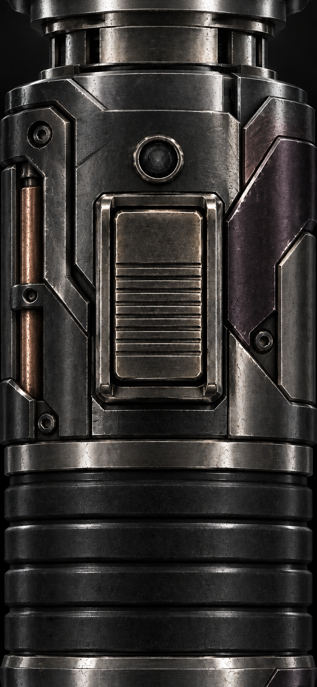
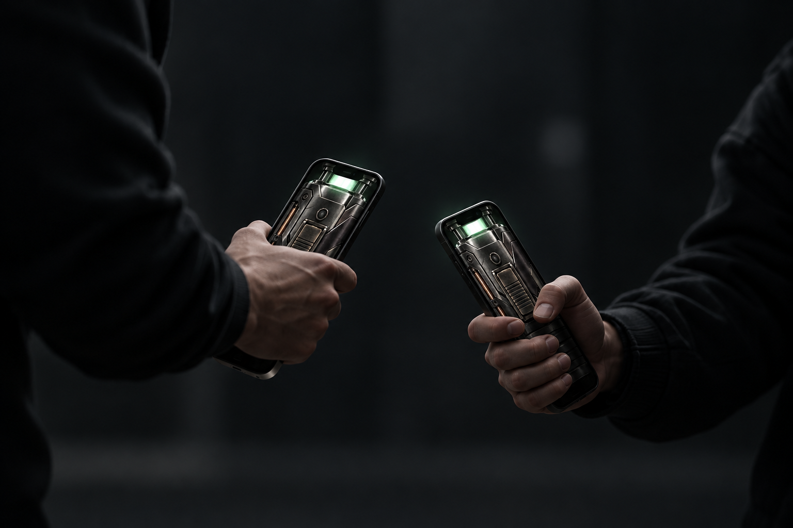

움직임에 반응하는 소리손끝에 전해지는 햅틱가까운 상대와 자동 연결
켜고. 바꾸고. 함께.
01
버튼을 눌러 점화
중앙 버튼을 눌러 검을 켜고 끄세요. 가볍게 움직이면 소리와 햅틱이 반응합니다.
02
밀어서 손잡이 변경
화면 아래쪽을 왼쪽이나 오른쪽으로 밀어보세요. 마음에 드는 손잡이를 고를 수 있습니다.
03
초록빛이면 연결 완료
가까이 있는 두 사람이 앱을 열면 상대를 찾습니다. 붉은빛은 탐색 중, 초록빛은 연결 완료입니다.
계정 없이,
가까운 두 사람.
혼자 즐기다가, 가까운 상대와 직접 연결하세요. 연결 이후 게임 메시지는 암호화되며, 게임 데이터를 개발자 서버로 보내지 않습니다.
개인정보 처리방침 →